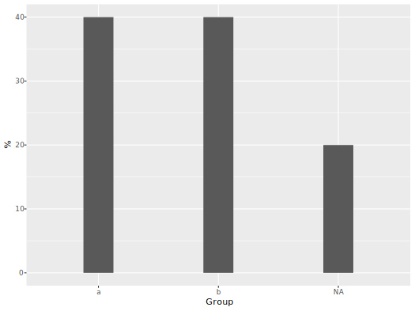

vignettes/introduction.Rmd
introduction.RmdTo begin, we can load up the tidyverse and this package. I’ll also create some data that will be useful for demonstration.
library(tidyverse); library(tidyext)
set.seed(8675309)
df1 <- tibble(
g1 = factor(sample(1:2, 50, replace = TRUE), labels=c('a','b')),
g2 = sample(1:4, 50, replace = TRUE),
a = rnorm(50),
b = rpois(50, 10),
c = sample(letters, 50, replace=TRUE),
d = sample(c(T,F), 50, replace=TRUE)
)
df_miss = df1
df_miss[sample(1:nrow(df1), 10), sample(1:ncol(df1), 3)] = NAWe can start by getting a quick numerical summary for a single column. As the name suggests, this will only work with numeric data.
num_summary(mtcars$mpg)
N Mean SD Min Q1 Median Q3 Max Missing
1 32 20.1 6 10.4 15.4 19.2 22.8 33.9 0
num_summary(df_miss$a, extra = T)
N Mean SD Min Q1 Median Q3 Max Missing Distinct Zeros
1 40 0.1 1 -2.6 -0.8 0.1 0.6 2 10 41 0Note that the result’s class is a data.frame, which makes it easy to work with.
x = num_summary(mtcars$mpg)
glimpse(x)
Observations: 1
Variables: 9
$ N <dbl> 32
$ Mean <dbl> 20.1
$ SD <dbl> 6
$ Min <dbl> 10.4
$ Q1 <dbl> 15.4
$ Median <dbl> 19.2
$ Q3 <dbl> 22.8
$ Max <dbl> 33.9
$ Missing <dbl> 0
mtcars %>%
map_dfr(num_summary, .id = 'Variable')
Variable N Mean SD Min Q1 Median Q3 Max Missing
1 mpg 32 20.1 6.0 10.4 15.4 19.2 22.8 33.9 0
2 cyl 32 6.2 1.8 4.0 4.0 6.0 8.0 8.0 0
3 disp 32 230.7 123.9 71.1 120.8 196.3 326.0 472.0 0
4 hp 32 146.7 68.6 52.0 96.5 123.0 180.0 335.0 0
5 drat 32 3.6 0.5 2.8 3.1 3.7 3.9 4.9 0
6 wt 32 3.2 1.0 1.5 2.6 3.3 3.6 5.4 0
7 qsec 32 17.8 1.8 14.5 16.9 17.7 18.9 22.9 0
8 vs 32 0.4 0.5 0.0 0.0 0.0 1.0 1.0 0
9 am 32 0.4 0.5 0.0 0.0 0.0 1.0 1.0 0
10 gear 32 3.7 0.7 3.0 3.0 4.0 4.0 5.0 0
11 carb 32 2.8 1.6 1.0 2.0 2.0 4.0 8.0 0There are also functions for summarizing missingness.
When dealing with a data frame of mixed types we can use the describe_* functions.
describe_all(df1)
$`Numeric Variables`
Variable N Mean SD Min Q1 Median Q3 Max Missing
1 g2 50 2.50 1.07 1.0 2.00 2.00 3.00 4.00 0
2 a 50 0.00 1.00 -2.6 -0.84 0.11 0.69 2.02 0
3 b 50 9.98 3.07 4.0 7.25 10.00 12.00 17.00 0
$`Categorical Variables`
# A tibble: 26 x 4
Variable Group Frequency `%`
<chr> <chr> <int> <dbl>
1 g1 b 28 56.
2 g1 a 22 44
3 c y 5 10
4 c s 4 8
5 c v 4 8
6 c d 3 6
7 c e 3 6
8 c i 3 6
9 c r 3 6
10 c t 3 6
# ... with 16 more rows
describe_all_cat(df1)
# A tibble: 26 x 4
Variable Group Frequency `%`
<chr> <chr> <int> <dbl>
1 g1 b 28 56.
2 g1 a 22 44
3 c y 5 10
4 c s 4 8
5 c v 4 8
6 c d 3 6
7 c e 3 6
8 c i 3 6
9 c r 3 6
10 c t 3 6
# ... with 16 more rows
describe_all_num(df1, digits = 1)
Variable N Mean SD Min Q1 Median Q3 Max Missing
1 g2 50 2.5 1.1 1.0 2.0 2.0 3.0 4 0
2 a 50 0.0 1.0 -2.6 -0.8 0.1 0.7 2 0
3 b 50 10.0 3.1 4.0 7.2 10.0 12.0 17 0Note how the categorical data result is just as ready for visualization as the numeric, as it can be filtered by the Variable column. It also has an option to deal with NA and some other stuff.
describe_all_cat(df_miss, include_NAcat = TRUE, sort_by_freq = TRUE) %>%
filter(Variable == 'g1') %>%
ggplot(aes(x=Group, y=`%`)) +
geom_col(width = .25)
Typically during data processing, we are performing grouped operations. As such there is a corresponding num_by and cat_by to provide the same information by some grouping variable. This basically is saving you from doing group_by %>% summarize() and creating variables for all these values. It can also take a set of variables to summarize using vars.
df_miss %>%
num_by(a, group_var = g2)
# A tibble: 4 x 12
g2 data Variable N Mean SD Min Q1 Median Q3 Max Missing
<int> <list> <chr> <dbl> <dbl> <dbl> <dbl> <dbl> <dbl> <dbl> <dbl> <dbl>
1 4 <tibble [12 × 1]> a 10 -0.4 1.1 -2.6 -0.9 -0.5 0.1 1.5 2
2 2 <tibble [17 × 1]> a 12 0 0.9 -1.4 -0.7 0.1 0.6 1.7 5
3 3 <tibble [11 × 1]> a 8 0.8 0.8 -0.2 0.3 0.7 1.4 2 3
4 1 <tibble [10 × 1]> a 10 0 0.8 -1.3 -0.7 0.2 0.6 1 0
df_miss %>%
num_by(vars(a, b), group_var = g2)
# A tibble: 8 x 11
g2 Variable N Mean SD Min Q1 Median Q3 Max Missing
<int> <chr> <dbl> <dbl> <dbl> <dbl> <dbl> <dbl> <dbl> <dbl> <dbl>
1 4 a 10 -0.4 1.1 -2.6 -0.9 -0.5 0.1 1.5 2
2 4 b 12 10.4 2.8 7 8 10 12.2 15 0
3 2 a 12 0 0.9 -1.4 -0.7 0.1 0.6 1.7 5
4 2 b 17 10.5 3 5 8 11 12 17 0
5 3 a 8 0.8 0.8 -0.2 0.3 0.7 1.4 2 3
6 3 b 11 9.1 2.9 4 7.5 10 10.5 13 0
7 1 a 10 0 0.8 -1.3 -0.7 0.2 0.6 1 0
8 1 b 10 9.5 3.8 4 7 8.5 13.2 15 0For categorical variables summarized by group, you can select whether the resulting percentage is irrespective of the grouping.
df1 %>%
cat_by(d,
group_var = g1,
perc_by_group = TRUE)
# A tibble: 4 x 5
# Groups: g1 [2]
g1 d N `% of Total` `% of g1`
<fct> <lgl> <int> <dbl> <dbl>
1 a FALSE 11 22 50
2 a TRUE 11 22 50
3 b FALSE 16 32 57.1
4 b TRUE 12 24 42.9
df1 %>%
cat_by(d,
group_var = g1,
perc_by_group = FALSE,
sort_by_group = FALSE)
# A tibble: 4 x 4
g1 d N `% of Total`
<fct> <lgl> <int> <dbl>
1 a FALSE 11 22
2 a TRUE 11 22
3 b FALSE 16 32
4 b TRUE 12 24In addition there are some functions for data processing. We can start with the simple one-hot encoding function.
onehot(iris) %>%
slice(c(1:2, 51:52, 101:102))
Sepal.Length Sepal.Width Petal.Length Petal.Width Species_setosa Species_versicolor Species_virginica
1 5.1 3.5 1.4 0.2 1 0 0
2 4.9 3.0 1.4 0.2 1 0 0
3 7.0 3.2 4.7 1.4 0 1 0
4 6.4 3.2 4.5 1.5 0 1 0
5 6.3 3.3 6.0 2.5 0 0 1
6 5.8 2.7 5.1 1.9 0 0 1It can do it sparsely.
iris %>%
slice(c(1:2, 51:52, 101:102)) %>%
onehot(sparse = TRUE)
6 x 3 sparse Matrix of class "dgCMatrix"
Species_xsetosa Species_xversicolor Species_xvirginica
1 1 . .
2 1 . .
3 . 1 .
4 . 1 .
5 . . 1
6 . . 1Choose a specific variable, whether you want to keep the others, and how to deal with NA.
df_miss %>%
onehot(var = c('g1', 'g2'), nas = 'na.omit', keep.original = FALSE) %>%
head()
a b c d g1_a g1_b g2_1 g2_2 g2_3 g2_4
1 0.1348980 12 i TRUE 1 0 0 0 0 1
2 0.1175821 5 k FALSE 1 0 0 1 0 0
3 -0.8255891 14 v FALSE 0 1 0 0 0 1
4 0.2142085 10 t TRUE 1 0 0 0 1 0
5 -0.6516404 7 i TRUE 0 1 0 1 0 0
6 0.7287033 7 b TRUE 0 1 1 0 0 0With create_prediction_data, we can quickly create data for use with predict after a model. By default it will put numeric variables at their mean, and categorical variables at their most common category.
create_prediction_data(iris)
Sepal.Length Sepal.Width Petal.Length Petal.Width Species
1 5.843333 3.057333 3.758 1.199333 setosa
create_prediction_data(iris, num = function(x) quantile(x, p=.25))
Sepal.Length Sepal.Width Petal.Length Petal.Width Species
1 5.1 2.8 1.6 0.3 setosaWe can also supply specific values.
cd = data.frame(cyl=4, hp=100)
create_prediction_data(mtcars, conditional_data = cd)
cyl hp mpg disp drat wt qsec vs am gear carb
1 4 100 20.09062 230.7219 3.596563 3.21725 17.84875 0.4375 0.40625 3.6875 2.8125For modeling purposes, we often want to center or scale the data, take logs etc. The pre_process function will standardize numeric data by default.
pre_process(df1)
# A tibble: 50 x 6
g1 g2 a b c d
<fct> <dbl> <dbl> <dbl> <chr> <lgl>
1 a 1.40 0.133 0.659 i TRUE
2 a -0.466 0.116 -1.62 k FALSE
3 b 1.40 -0.828 1.31 v FALSE
4 b -0.466 -2.14 -0.972 l FALSE
5 a 0.466 0.212 0.00652 t TRUE
6 b -0.466 -0.949 0.333 t TRUE
7 b -0.466 -0.654 -0.972 i TRUE
8 b -1.40 0.727 -0.972 b TRUE
9 b 0.466 1.05 -1.95 k TRUE
10 a -1.40 0.100 -1.95 d TRUE
# ... with 40 more rowsOther options are to simply center the data (scale_by = 0), start some variables at zero (e.g. time indicators), log some variables (with chosen base), and scale some to range from zero to one.
pre_process(mtcars,
scale_by = 0,
log_vars = vars(mpg, wt),
zero_start = vars(cyl),
zero_one = vars(hp, starts_with('d'))) %>%
describe_all_num()
Variable N Mean SD Min Q1 Median Q3 Max Missing
1 mpg 32 2.96 0.30 2.34 2.74 2.95 3.13 3.52 0
2 cyl 32 2.19 1.79 0.00 0.00 2.00 4.00 4.00 0
3 disp 32 0.40 0.31 0.00 0.12 0.31 0.64 1.00 0
4 hp 32 0.33 0.24 0.00 0.16 0.25 0.45 1.00 0
5 drat 32 0.39 0.25 0.00 0.15 0.43 0.53 1.00 0
6 wt 32 1.12 0.32 0.41 0.95 1.20 1.28 1.69 0
7 qsec 32 0.00 1.79 -3.35 -0.96 -0.14 1.05 5.05 0
8 vs 32 0.00 0.50 -0.44 -0.44 -0.44 0.56 0.56 0
9 am 32 0.00 0.50 -0.41 -0.41 -0.41 0.59 0.59 0
10 gear 32 0.00 0.74 -0.69 -0.69 0.31 0.31 1.31 0
11 carb 32 0.00 1.62 -1.81 -0.81 -0.81 1.19 5.19 0Note that center/standardizing is done to any numeric variables not chosen for log, zero_start, and zero_one.
Here’s a specific function you will probably never need, but will be glad to have if you do. Some data columns have multiple entries for each observation/cell. While it’s understandable why someone would do this, it’s not very good practice. This will split out the entries, or any particular combination of them, into their own indicator column.
d = data.frame(id = 1:4,
labs = c('A-B', 'B-C-D-E', 'A-E', 'D-E'))
combn_2_col(data=d, var='labs', max_m=2, sep = '-', collapse = ':', toInteger = T)
id labs combo A B A:B C D E B:C B:D B:E C:D C:E D:E A:E
1 1 A-B A, B, A:B 1 1 1 0 0 0 0 0 0 0 0 0 0
2 2 B-C-D-E B, C, D, E, B:C, B:D, B:E, C:D, C:E, D:E, B:C, B:D, B:E, C:D, C:E, D:E, B:C, B:D, B:E, C:D, C:E, D:E 0 1 0 1 1 1 1 1 1 1 1 1 0
3 3 A-E A, E, A:E 1 0 0 0 0 1 0 0 0 0 0 0 1
4 4 D-E D, E, D:E 0 0 0 0 1 1 0 0 0 0 0 1 0
combn_2_col(data=d, var='labs', max_m=2, sparse = T)
4 x 13 sparse Matrix of class "dgCMatrix"
[[ suppressing 13 column names 'A', 'B', 'A_B' ... ]]
1 1 1 1 . . . . . . . . . .
2 . 1 . 1 1 1 1 1 1 1 1 1 .
3 1 . . . . 1 . . . . . . 1
4 . . . . 1 1 . . . . . 1 .In addition, there is a function that makes tidyr’s spread work like it should when you don’t have unique identifiers. I spent a lot of time coming up with the name for this one.
# initial example from spread
stocks_init <- data.frame(
time = as.Date('2009-01-01') + 0:9,
X = rnorm(10, 0, 1),
Y = rnorm(10, 0, 2),
Z = rnorm(10, 0, 4)
)
# a very common situation
stocks <- data.frame(
X = rnorm(10, 0, 1),
Y = rnorm(10, 0, 2),
Z = rnorm(10, 0, 4)
)
stocksm_init <- stocks_init %>%
gather(stock, price, -time)
head(stocksm_init)
time stock price
1 2009-01-01 X -1.59906122
2 2009-01-02 X -0.58507341
3 2009-01-03 X 0.10297546
4 2009-01-04 X 0.57510785
5 2009-01-05 X -0.73661982
6 2009-01-06 X 0.07877431
stocksm_init %>%
spread(stock, price) %>%
head() # works fine
time X Y Z
1 2009-01-01 -1.59906122 1.1124121 -1.5839615
2 2009-01-02 -0.58507341 3.0006986 -0.5418023
3 2009-01-03 0.10297546 -1.1428186 -6.4166333
4 2009-01-04 0.57510785 0.7507538 2.0308748
5 2009-01-05 -0.73661982 -0.3537170 1.4792335
6 2009-01-06 0.07877431 1.4676246 -6.8298506
# no time
stocksm <- stocks %>%
gather(stock, price)
head(stocksm)
stock price
1 X -0.30010348
2 X -0.04637378
3 X 0.60673289
4 X 0.09171312
5 X -0.93331616
6 X -0.54673791
stocksm %>%
spread(stock, price) # annoying
Error: Duplicate identifiers for rows (1, 2, 3, 4, 5, 6, 7, 8, 9, 10), (11, 12, 13, 14, 15, 16, 17, 18, 19, 20), (21, 22, 23, 24, 25, 26, 27, 28, 29, 30)
stocksm %>%
spread2(stock, price) # works fine
X Y Z
1 -0.30010348 0.3073168 -3.2191611
2 -0.04637378 2.5384376 -6.6166022
3 0.60673289 -1.6274788 -9.0812459
4 0.09171312 2.7182449 10.1013686
5 -0.93331616 1.4213715 -2.9779181
6 -0.54673791 2.5667069 -0.3142993
7 0.32299152 2.7718552 -7.0087740
8 -0.19948254 0.4844541 -1.0168833
9 -0.48640977 0.4442896 2.6455004
10 -0.83674249 2.8164876 -6.2074892However, with unbalanced data the result can be interpreted in different ways, so you’ll have a choice to make.
stocksm$price[sample(1:nrow(stocksm), 5)] = NA
stocksm %>%
spread2(stock, price)
X Y Z
1 -0.30010348 0.3073168 NA
2 -0.04637378 2.5384376 -6.6166022
3 0.60673289 -1.6274788 -9.0812459
4 0.09171312 2.7182449 10.1013686
5 -0.93331616 1.4213715 -2.9779181
6 NA 2.5667069 -0.3142993
7 0.32299152 2.7718552 -7.0087740
8 -0.19948254 0.4844541 -1.0168833
9 -0.48640977 0.4442896 2.6455004
10 NA NA NA
stocksm %>%
spread2(stock, price, compact = FALSE)
X Y Z
1 -0.30010348 NA NA
2 -0.04637378 NA NA
3 0.60673289 NA NA
4 0.09171312 NA NA
5 -0.93331616 NA NA
6 NA NA NA
7 0.32299152 NA NA
8 -0.19948254 NA NA
9 -0.48640977 NA NA
10 NA NA NA
11 NA 0.3073168 NA
12 NA 2.5384376 NA
13 NA -1.6274788 NA
14 NA 2.7182449 NA
15 NA 1.4213715 NA
16 NA 2.5667069 NA
17 NA 2.7718552 NA
18 NA 0.4844541 NA
19 NA 0.4442896 NA
20 NA NA NA
21 NA NA NA
22 NA NA -6.6166022
23 NA NA -9.0812459
24 NA NA 10.1013686
25 NA NA -2.9779181
26 NA NA -0.3142993
27 NA NA -7.0087740
28 NA NA -1.0168833
29 NA NA 2.6455004
30 NA NA NAI can speak from experience that having longitudinal data in the compact = FALSE format is about the worst way you could keep such data.
Use gather_multi to extend tidyr::gather to deal with multiple sets of variables.
demo_data_wide = data.frame(id = 1:10,
X = matrix(rnorm(40), ncol = 4),
Y = matrix(sample(0:1, 40, replace = T), ncol = 4),
Z = matrix(rpois(40, 5), ncol = 4))
head(demo_data_wide)
id X.1 X.2 X.3 X.4 Y.1 Y.2 Y.3 Y.4 Z.1 Z.2 Z.3 Z.4
1 1 -0.19243744 -0.4689302 -0.21104169 -0.241876351 0 0 1 0 2 7 5 6
2 2 1.91054488 0.2183588 -0.15781795 -0.002380555 0 1 0 1 6 4 4 4
3 3 1.81194690 -0.4847632 0.26497555 0.606575842 0 1 1 0 4 5 5 6
4 4 0.32660821 1.6750783 1.03616158 0.396278621 1 1 1 1 2 1 6 5
5 5 -0.03086187 -0.1271406 -0.52738827 0.191450255 1 0 1 1 1 4 7 4
6 6 0.32977324 -1.0522690 0.02581511 -0.208803206 0 0 1 0 4 2 7 6
gather_multi(demo_data_wide,
key = wave,
values = vars(X, Y, Z),
varlist = vars(starts_with('X'),
starts_with('Y'),
starts_with('Z')),
-id)
id wave X Y Z
1 1 X.1 -0.192437435 0 2
2 2 X.1 1.910544878 0 6
3 3 X.1 1.811946902 0 4
4 4 X.1 0.326608211 1 2
5 5 X.1 -0.030861870 1 1
6 6 X.1 0.329773239 0 4
7 7 X.1 -0.719256687 0 4
8 8 X.1 -0.166940295 0 5
9 9 X.1 -2.390048303 0 2
10 10 X.1 -0.713422581 1 4
11 1 X.2 -0.468930187 0 7
12 2 X.2 0.218358803 1 4
13 3 X.2 -0.484763223 1 5
14 4 X.2 1.675078346 1 1
15 5 X.2 -0.127140603 0 4
16 6 X.2 -1.052268995 0 2
17 7 X.2 0.726337491 1 4
18 8 X.2 -0.775951153 1 2
19 9 X.2 -1.137233613 0 4
20 10 X.2 1.013345290 1 3
21 1 X.3 -0.211041685 1 5
22 2 X.3 -0.157817955 0 4
23 3 X.3 0.264975554 1 5
24 4 X.3 1.036161575 1 6
25 5 X.3 -0.527388267 1 7
26 6 X.3 0.025815109 1 7
27 7 X.3 0.221545813 1 4
28 8 X.3 1.001611768 1 3
29 9 X.3 1.291800142 0 8
30 10 X.3 0.977346606 1 7
31 1 X.4 -0.241876351 0 6
32 2 X.4 -0.002380555 1 4
33 3 X.4 0.606575842 0 6
34 4 X.4 0.396278621 1 5
35 5 X.4 0.191450255 1 4
36 6 X.4 -0.208803206 0 6
37 7 X.4 0.681158917 0 6
38 8 X.4 -0.463026943 0 9
39 9 X.4 1.880004874 0 6
40 10 X.4 -0.325801499 0 4Note that this only makes sense with balanced data, though it will work if NAs are present. Also, you may want to change the key in some fashion.